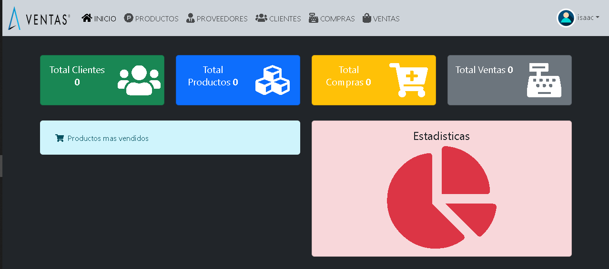
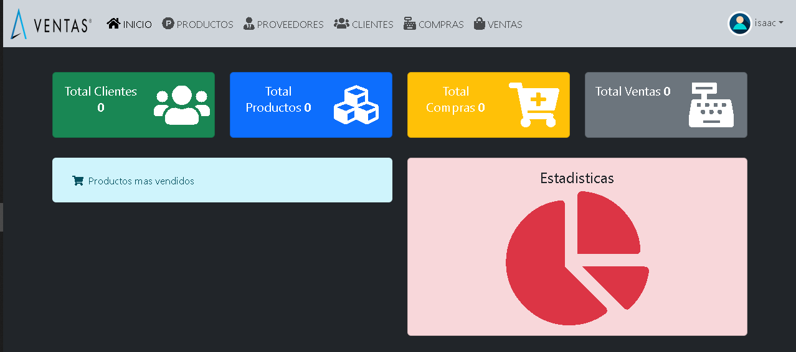

DESCRIPCION
Nombre: Isaac Parisaca
Edad: 19 años
Pais: Cochabamba - Bolivia
Experiencia : 1 año y 5 meses de experiencia
- HABILIDADES
- - Conocimientos intermedios en lenguajes de programación como HTML, CSS y JavaScript
- - Experiencia en desarrollo web con frameworks como Bootstrap y Vue
- - Familiaridad con herramientas de desarrollo como Git y Visual Studio Code
- PERSONALIDAD
- - Apasionado por la programación y la tecnología
- - Aprendiz rápido y dispuesto a mejorar constantemente
- - Buen comunicador y trabajador en equipo
- - Proactivo y dispuesto a asumir desafíos
- OBJETIVOS
- - Mejorar sus habilidades en programación y desarrollo web
- - Aprender nuevos lenguajes y tecnologías
- - Contribuir a proyectos de código abierto y colaborar con otros desarrolladores
- - Desarrollar habilidades de liderazgo y gestión de proyectos
- DEBILIDADES
- - Falta de experiencia en proyectos a gran escala
- - Necesita mejorar sus habilidades en diseño y arquitectura de software
- - A veces se siente abrumado por la cantidad de información nueva que debe aprender
- METAS A CORTO PLAZO
- - Completar un proyecto personal de desarrollo web en los próximos 3 meses despues de terminar el bootcamp
- - Aprender a utilizar un nuevo lenguaje de programación (como Java o Ruby) en los próximos 6 meses
- - Participar en un proyecto de código abierto y colaborar con otros desarrolladores en los próximos 6 meses
- METAS A LARGO PLAZO
- - Convertirse en un desarrollador senior en los próximos 3 años
- - Liderar un equipo de desarrollo en los próximos 7 años
- - Crear su propia empresa de desarrollo de software en los próximos 12 años
- fRASES QUE ME DEFINEN
- - Aprendo algo nuevo cada día
- - La programación es mi pasión
- - Crear su propia empresa de desarrollo de software en los próximos 12 años
Servicios
Front End
Front End es la parte de una aplicación que interactúa con los usuarios, es
conocida como el lado del cliente. Básicamente es todo lo que vemos en la
pantalla cuando accedemos a un sitio web o aplicación: tipos de letra, colores,
adaptación para distintas pantallas(RWD), los efectos del ratón, teclado,
movimientos, desplazamientos, efectos visuales… y otros elementos que
permiten navegar dentro de una página web. Este conjunto crea la experiencia del
usuario.
Como hemos dicho, el desarrollador front end se encarga de la experiencia del
usuario, es decir, en el momento en el que este entra a una página web, debe ser
capaz de navegar por ella, por lo que el usuario verá una interface sencilla de
usar, atractiva y funcional.
Development
Un desarrollador de software es responsable de escribir, mantener y mejorar el código de aplicaciones informáticas. Sus funciones incluyen el diseño, la implementación, las pruebas y la optimización del software para asegurar su funcionamiento eficiente y cumplir con los requisitos del usuario. Trabaja en equipo con otros desarrolladores y profesionales de tecnología, y se mantiene actualizado con las últimas tecnologías y mejores prácticas de desarrollo.
Completamente responsivo
Cuando utilizamos el término “responsive” (adaptable), nos referimos principalmente a
“responsive design” (diseño web adaptable). Esto significa hacer que un sitio web
sea accesible y adaptable en todos los devices: tabletas, smartphones, etc.
El principio de responsive design se logra a través de hojas de estilos en cascada
(CSS) y técnicas de programación (HTML). Con estas técnicas, puede evitar que se
integre el mismo contenido varias veces, ya que el objetivo del responsive design es
adaptar el mismo conjunto de contenidos a las diferentes tecnologías que se
utilizan..
PROYECTOS
Netflix Clone
Réplica completa de la interfaz de usuario de Netflix, implementando diseño responsive y funcionalidades clave como reproducción de videos, navegación por categorías y sistema de recomendaciones. El proyecto demuestra habilidades en maquetación avanzada y experiencia de usuario.
HBO Max Clone
Recreación de la plataforma HBO Max, incluyendo sistema de navegación, catálogo de contenido y reproductor de medios. El proyecto destaca por su fidelidad al diseño original y optimización para diferentes dispositivos.
 

Sistema de Ventas
Sistema completo de gestión de ventas e inventario con funcionalidades de facturación, control de stock, reportes y análisis de datos. Incluye panel de administración y diferentes niveles de acceso de usuarios.
Cooperativa Loyola WEB-CMS (En produccion)
Es una página web responsiva y elegante, diseñada para la Cooperativa Loyola. Cuenta con un panel administrativo intuitivo que permite modificar fácilmente todos los datos de la plataforma, desde la calculadora DPF hasta banners y secciones. Este CMS casi completo está construido con las últimas tecnologías, ofreciendo una experiencia de usuario moderna y fluida. Facilita la gestión de contenido y mejora la interacción con los miembros de la cooperativa, adaptándose a sus necesidades específicas.
Hamilo WEB-CMS-CRM (En pre produccion)
Hamilo es una plataforma web integral que combina un sistema de gestión de contenido (CMS) y un sistema de gestión de relaciones con clientes (CRM), diseñada para la gestión de estudiantes. Permite a las instituciones educativas administrar eficientemente la información de los estudiantes, incluyendo inscripciones, calificaciones y asistencia, todo desde un panel administrativo intuitivo y personalizable. Con tecnología de última generación, Hamilo ofrece una interfaz moderna y responsiva, garantizando una experiencia de usuario fluida en cualquier dispositivo. Además, se integra fácilmente con otras herramientas y servicios, asegurando la seguridad de los datos y la escalabilidad para adaptarse al crecimiento de la institución. Desarrollado con tecnologías como Vue.js, Node.js y Laravel, Hamilo proporciona un rendimiento óptimo y un servicio confiable en la nube.